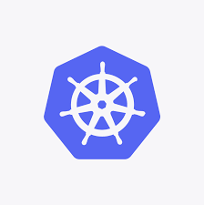
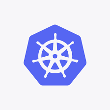
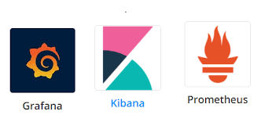
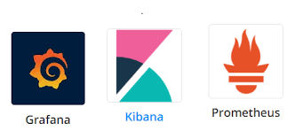
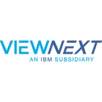

 

Sobre Mí
DevOps Engeenier, con más de dos años de experiencia en: Automatización de tareas, Implementación y optimización de pipelines CI/CD, Creación y administración de contenedores,Monitorización de Sistemas,Control de versiones y Desarrollo de scripts. Con herramientas como:Ansible, Linux, Docker,git , bitbucket, jenkins, python , kiebana, Groovy. Me considero una persona proactiva que le gusta trabajar en equipo
Experiencia
Viewnext
Helpdesk support
Helpdesk
Es una consultora del grupo IBM en España, en ella ejercí como cargo en prácticas de empresa. Fue técnicamente hablando mi primer cargo en el mundo IT. En el aprendí más la parte de sistemas como el uso de las siguientes tecnologías para ayudar de manera interna a mis compañeros de trabajo que pedian una seríe de herramientas it para trabajar. como: Herramientas de ticket como JIRA , citrix, Escritorio remoto , configuraciones de red , comandos de windows básicos
DXC Technology
Tecnico de soporte Devops
TÉCNICO DE SOPORTE DEVOPS:
Es una consultora estado unidense, en este caso al terminar mi ciclo formativo de grado superior , hice las prácticas en está empresa . Mis labores ha realizar era como un aprendiz de devops Engeenier aprendiendo de personas más expertas en ese campo como por ejemplo : automatizar el flujo de trabajo en una serie de tareas repetidas , implementación de la lógica de pipelines para proyectos de lenguaje Angular, creación de un flujo de pipelines para poder realizar una serie de tareas como contrucción , revision y despliegue de un proyecto. Para poder realizar estas tareas usaba este tipo de herramientas IT: Ansible para poder automatizar una serie de tareas , git para el control del flujo de versiones, bitbucket y jenkins para crear nuestro flujo de pipelines,docker para creacion de imagenes , docker-compose/kubernetes para las configuraciones/orquestación , manejo de comandos de linux y windows para automatización de tareas grafana , elastic kiebana y dynatrace más creación de scripting con python para poder sacar logs ,metricas , fallos de cpu , creación e implementacion de pipelines con groovy , creación y configuración de pipelines con YAML
MasOrange
Devops Engeenier
DEVOPS Engeenier ci/cd:
Empresa de telecomunicaciones nacida por la fusión actual de Orange más Masmovil. En esta empresa escale un puesto a devops Engeenier. En ellas mis labores de trabajo eran parecido a Dxc pero sin parte de monitorización . Me encargaba de la parte de automatización de procesos, implementacion de la logica de pipelines de varios proyectos en diferentes lengiajes de programación como javaScript ,maven ,c# este último me siento más orgulloso al ser una versión casí descatalogada. Creación y configuracion de pipelines(workflow) con YAML en gitlab Con una serie de pasos que debian cumplir esas pipelines. Para ello usaba las siguientes herramientas it: gitlab y jenkins para creación de pipelines y orquestación de proyectos con el ultimo más configuraciones de archivos jenkinsfile. Cración de pipelines con YAML en gitlab pasando por una serie de pasos, uso de metodologia gitflow entre ramas para poder lograr los resultados mencionados. uso de git para el sistema de versionado Implementación de lógica de pipelines con groovy , control del sistema de versionado con artifactory y s3 de aws ese último gestionado con kubernetes. Creación de imagenes docker para nuestros casos de prueba de nuestra aplicación , tambien usabamos para los casos de prueba EC2 de Aws para ejecucón de comandos para proyectos de nuestros compañeros paso por sonarq para medir la calidad de código. Automatización de una serie de acciones realizada con bash shell o python para poder crear una serie de repositorios con sus ramas necesarias uso de Ansible para automatización de acciones . tecnologias usadas : Docker ,kubernetes ,Aws , groovy , YAML, artifactory , gitlab ,jenkins ,sonarq, linux,python ,Ansible ,powershell,rundeck,EKS,vscode,git
Serbatic
Devops CD
DEVOPS CD:
Empresa española de consultoria perteneciente al grupo VASS en ella realizo las funciones administar y configurar jenkins, uso de git para el manejo del control de versiones, administracion y configuración de nexus , tecnologias it usadas : nexus , git , jenkins , tortoise , linux , windows ,powershell